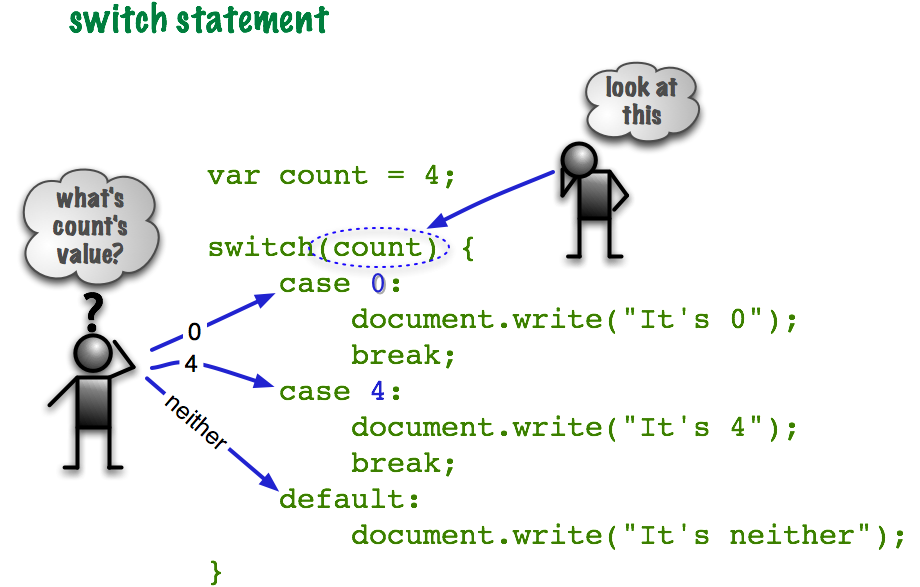
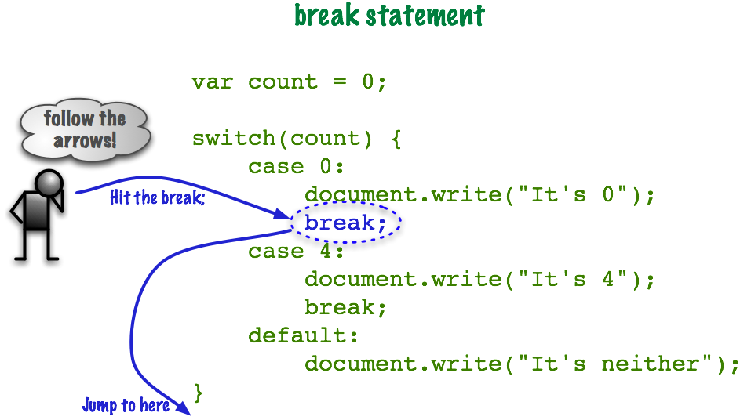

The Case Structure
Programming languages have many ways to do the same thing. This is another way to organize selection.
Remember this?
IF choice is "A" THEN do the A things ELSE IF choice is "B" THEN do the B things ELSE IF choice is "C" THEN do the C things ELSE IF choice is "D" THEN do the D things ELSE IF choice is "E" THEN do the E things ELSE IF choice is "F" THEN do the F things ELSE IF choice is "G" THEN do the G things ELSE do the default thing ENDIF
This was better than what we tried before that but there is yet another way to do this. Sometimes we have to use the if/else if/else if/else structure, but the case structure works well too as long as we are checking the value of the same variable. Here is the above algorithm in case structure pseudocode.
CASE OF choice "A": do the A things "B": do the B things "C": do the C things "D": do the D things "E": do the E things "F": do the F things "G": do the G things default: do the default thing ENDCASE
The preceding Case Structure compares the value of choice with all the values and does what comes after them. Here is the same thing in JavaScript.
// switch statement
switch(choice) {
case "A":
do the A things;
break;
case "B":
do the B things;
break;
case "C":
do the C things;
break;
case "D":
do the D things;
break;
case "E":
do the E things;
break;
case "F":
do the F things;
break;
case "G":
do the G things;
break;
default:
do the default;
}
Let's look at the parts.
Take a break;
What does break; do? The case statements don't stop when they hit another case. They "fall through" to the next statement. This can lead to some wicked bugs, or some really cool behavior, depending on how you look at it! Here's an example.
// No break statements
var count = 0;
switch(count) {
case 0:
document.write("It's 0\n");
case 4:
document.write("It's 4\n");
default:
document.write("It's neither");
}
What happened? Without the break; it just keeps going. This is actually a feature! For some programming problems this is a very clear and efficient solution. However, most of the time we need to code like this:
// With break statements
var count = 0;
switch(count) {
case 0:
document.write("It's 0\n");
break;
case 4:
document.write("It's 4\n");
break;
default:
document.write("It's neither");
}

It ran the case 0: code and hit the break; and stopped.
If none of the case statements is true then it will run the optional default: section.
Data Types and switch
We can use any data type with switch statements. Here's an example with strings.
// switch with strings
var code = 'X';
switch(code) {
case 'X':
document.write("It's X\n");
break;
case 'Y':
document.write("It's Y\n");
break;
default:
document.write("It's neither");
}
Even Booleans? Yes.
// switch with booleans
var test = true;
switch(test) {
case true:
document.write("It's true\n");
break;
case false:
document.write("It's false\n");
break;
}
Note we still have a break; statement after the second one even though there's no other branches for this to "fall through" to. That's because we're planning for the future. If we added another option to this we might accidentally forget to add in the break;.
Yep, that worked too. But we don't need a default: in
this situation.
Just because we can do something doesn't mean we should. Don't use a switch statement to test if something is true or false. Use an IF/Else statement.
OK, that's clear, what's next? How about a full example for your review?
Full Example: Process Customer Record with Case Structure
Switch vs Nested IF
The main advantage of using a Switch statement is to take advantage of the fact that we can "drop through" to other steps. Intentionally leaving out breaks in a switch statement can actually be a valuable tool in building more complex software.
Using switch statements instead of Nested IF statements is a common approach, but eventually, you'll learn how to do decisions in your program that don't require either. But to do that you'll need to understand object-oriented programming. For now, practice working with switch statements in the following labs.
Examples
- Let's take a look at this example Case Algorithm: Case Algorithm
Lab Time
I think and think for months and years. Ninety-nine times, the conclusion is false. The hundredth time I am right. - Albert Einstein